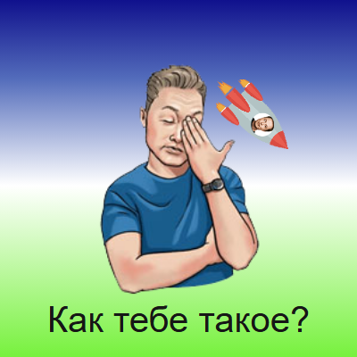
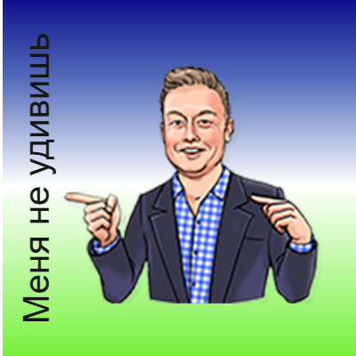

Лабораторные
3. Flexbox-ролик
Вариант 4
Управление роликом
- Наведите мышь на картинку - появятся Маск, ракета и надпись.
- Наведите на ракету в левом верхнем углу и оставьте указатель на месте - ракета полетит по спирали.
- Нажмите и удерживайте кнопку мыши на картинке - Маск сменится и начнет махать пальцем, а ролик задрожит вправо-влево.
Что нужно было сделать
Нужно было сверстать небольшой анимированный ролик размером 200 на 200 пикселей по готовым картинкам. Ролик должен менять кадр при наведении и при нажатии мыши, а элементы внутри него должны быть расставлены через Flexbox. JavaScript в этой работе не используется, все сделано только на CSS. Стили лежат в отдельном файле css/flex.css.
Для работы были выданы отдельные картинки с прозрачным фоном:


Состояния ролика
Всего в ролике четыре состояния. Все кадры лежат друг на друге в одном flex-контейнере, а показывается только нужный. Остальные скрыты с помощью visibility: hidden и opacity: 0.
Обычное состояние

Персонаж и ракета стоят рядом и покачиваются. Для этого написаны две анимации @keyframes, которые повторяются бесконечно. Выравнивание по нижнему краю сделано через align-items: flex-end.
Кадр собран как обычный flex-контейнер, поэтому картинки сами встают в ряд, а justify-content: center ставит их по центру. Снизу задан внутренний отступ 12 пикселей, чтобы персонажи не стояли прямо на краю ролика. Анимации немного разные: человек поворачивается на 7 градусов в каждую сторону, а ракета еще и двигается вверх и вниз через translateY. Длительность у них одинаковая, 1.8 секунды, поэтому они движутся в одном ритме. Точка поворота человека находится почти у него под ногами, так что он покачивается, а не вращается вокруг своего центра.
Наведение

Когда мышь попадает на ролик, срабатывает псевдокласс :hover. Первый кадр скрывается, и появляется второй с надписью «Как тебе такое?».
У каждого кадра стоит position: absolute и inset: 0, то есть он занимает весь ролик целиком. Поэтому при смене кадра ничего не прыгает и размер ролика не меняется. Надпись тоже поставлена абсолютно: она прижата к низу кадра и растянута на всю ширину, а по центру текст стоит благодаря text-align: center.
Этот же кадр показывается, если выбрать ролик с клавиатуры клавишей Tab. Для этого вместе с :hover в селекторе указан :focus-visible. Здесь же в левом верхнем углу появляется маленькая ракета, с которой связан следующий шаг.
Полет ракеты

Самая интересная часть работы. Ракета движется по кривой, заданной через offset-path. Свойство offset-distance показывает, какую часть пути ракета уже прошла: 0% - это начало кривой, а 100% - конец. Анимация просто меняет это значение за 5 секунд, а linear делает скорость одинаковой на всем пути.
Чтобы ракета не летела боком, используется offset-rotate: auto 45deg. Значение auto поворачивает картинку вдоль кривой, а к нему добавляется еще 45 градусов. Сама кривая записана в виде нескольких отрезков с командой C. Она постепенно сужается к центру, поэтому получается спираль:
.flex-movie__rocket:hover .flex-movie__flight {
offset-path: path("M 32 44 C 62 10, 151 12, 172 53 ...");
offset-rotate: auto 45deg;
animation: flex-spiral-flight 5s linear infinite;
}
@keyframes flex-spiral-flight {
from { offset-distance: 0%; }
to { offset-distance: 100%; }
}Сначала полет все время прерывался, потому что ракета улетала из-под указателя и :hover переставал работать. Чтобы это исправить, наведение отслеживается на неподвижном родителе, а двигается только картинка внутри него.
Нажатие

Пока кнопка мыши зажата, работает псевдокласс :active. Появляется третий кадр, рука качается отдельной анимацией, а весь ролик дрожит вправо и влево. Вертикальная надпись «Меня не удивишь» сделана через writing-mode.
Дрожание сделано очень короткой анимацией: за 0.18 секунды ролик сдвигается на 1.5 пикселя влево и вправо. Рука - это отдельная картинка, которая лежит поверх туловища и поворачивается на 16 градусов в обе стороны. Когда кнопку мыши отпускают, :active перестает действовать, и ролик сам возвращается к кадру наведения, скрипт для этого не нужен. Сам ролик сделан кнопкой button, поэтому этот кадр можно увидеть и с клавиатуры, если выбрать ролик и удерживать пробел.
Вывод
В этой работе получилось попрактиковаться с Flexbox и CSS-анимацией. Оказалось, что простое интерактивное поведение можно сделать совсем без скриптов, только на псевдоклассах. Про свойства Flexbox есть отдельная статья с примерами.
← Предыдущая работа: 2. Рисунок CSS Следующая работа: 6. DOM-тест →